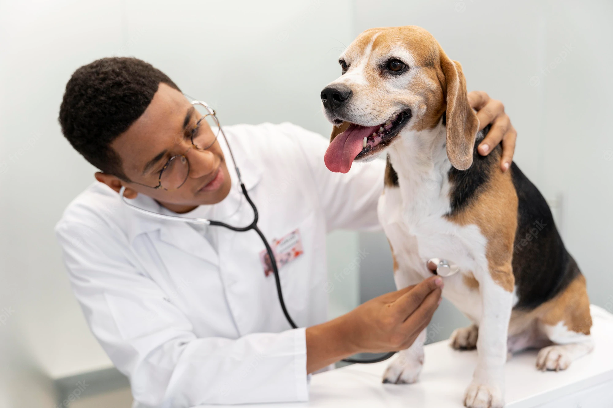
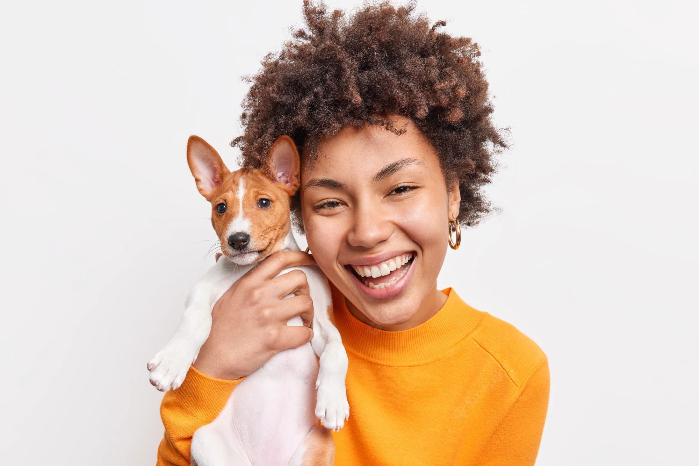

<div class="row">
    <div class="col text-center">
        
        <h1 class="mb-5">Welcome to PetClinic</h1>
    </div>
</div>

<div class="row text-center">
    <div class="col-4">
        <a ui-sref="vets" id="HomeVetlink" class="text-dark text-decoration-none text-reset">
            
            <h2>Veterinarians</h2>
        </a>
    </div>
    <div class="col-4">
        <a ui-sref="owners" id="HomeOwnerLink" class="text-dark text-decoration-none text-reset">
            
            <h2>Owners and Pets</h2>
        </a>
    </div>
    <div class="col-4">
        <a ui-sref="owners" id="HomeBillLink" class="text-dark text-decoration-none text-reset">
            
            <h2>Bills</h2>
        </a>
    </div>
</div>

<div class="row text-center">
    <small class="col text-muted">
        Images from:
        <a class="text-decoration-none text-reset"
           href="https://www.freepik.com/free-photo/veterinarian-checking-dog-medium-shot_19894397.htm#query=veterinarian&position=8&from_view=keyword">
            Freepik
        </a>
    </small>
</div>